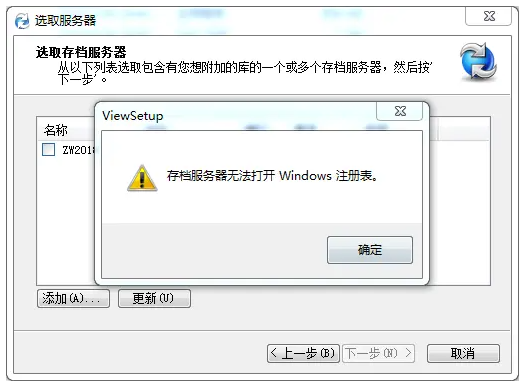
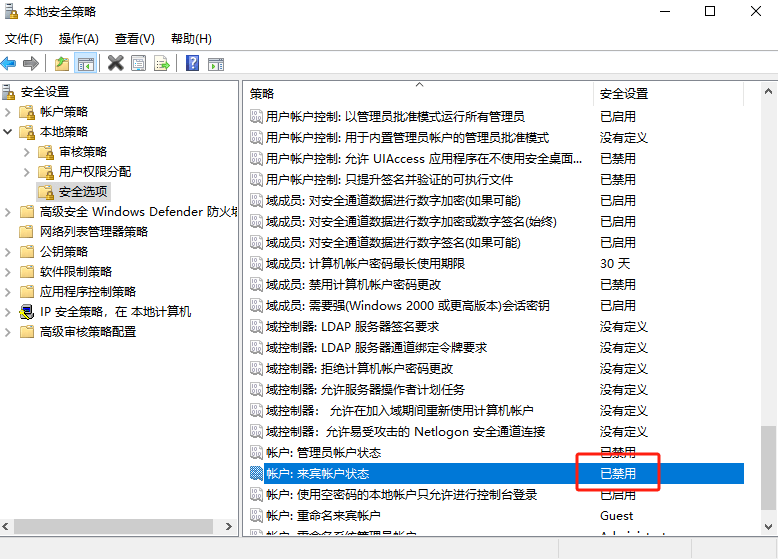
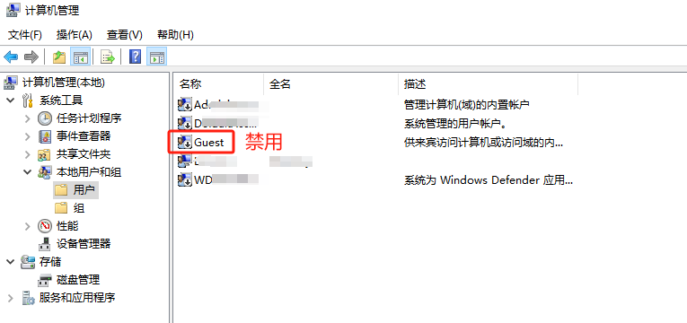

无法打开注册表
存档服务器无法打开Windows注册表

情况1：生成本地视图失败
情况2：检入时资源管理器闪退
方法1：本地权限问题
本地的admin被禁用了，解禁后用admin配置参考1：SOLIDWORKS PDM 存档服务器无法打开 Windows 注册表？)
存档服务器错误，在某些情况下，此过程可能会失败，并出现错误“存档服务器无法打开 Windows 注册表”

存档服务器无法打开 Windows 注册表
可能还有其他相关错误，我在下面列出了这些错误：
- 无法初始化存档服务连接。错误说明：系统检测到可能危及安全性的尝试。
- 无法联系任何机构进行身份验证。
- 安全包中没有可用的凭据。
- 无法向服务器进行身份验证。
- 在此上下文中，指定的存档服务器操作无效。
- 存档服务器无法打开 Windows 注册表。
- 不支持请求的函数。
在创建本地库视图或尝试在 PDM 管理中“刷新”库时，也可能会出现此问题。

此错误经常发生在与公司域断开连接的客户端计算机上。该问题源于当客户端发送 Windows 域配置文件凭据进行身份验证时域控制器没有响应。
如果用户通过 Azure Active Directory 帐户使用 Windows 登录，也可能会出现此问题。当使用本地计算机用户配置文件安装 PDM 并且无法使用域网络帐户创建库时，也会出现此问题。
解决注册表访问错误
可能的解决方案包括：
- 使用其他 Windows 用户帐户运行管理工具或查看安装向导。
- 浏览至 SOLIDWORKS PDM 安装文件夹
- 按住“SHIFT”键并右键单击应用程序以运行 ConisioAdmin.exe’ 以附加存档服务器或 ViewSetup.exe’ 以创建本地库视图。
- 选择“以其他用户身份运行”。

以其他用户身份运行
- 使用其他本地 Windows 帐户，并使用格式“SYSTEM_Name\USER_Name”输入本地系统名称。

以其他用户身份运行
- 创建属于本地管理员组的临时 Windows 用户。以此临时 Windows 用户身份登录时，附加 Vault 或创建本地 Vault 视图。现在，登录到域时，应该可以访问保管库和保管库视图。
方法2：禁用服务器来宾
禁用服务器来宾 并将安全策略禁用 。

解决方法： 禁用服务器来宾，并将安全策略禁用
在“工具”菜单 >“默认设置”>“安全性”选项卡中，选中“SOLIDWORKS PDM 存档服务器配置”工具。
在启用托管存档服务器服务的计算机上，如果在 SOLIDWORKS 工作组网络设置中启用来宾帐户，也会看到此错误。禁用来宾帐户后，将服务器添加到客户端上的服务器列表中，您将收到输入 Windows 凭据的提示。
在客户端机器上添加服务器后，您可以再次启用服务器的来宾帐户。不需要禁用客户端机器上的来宾帐户。
 